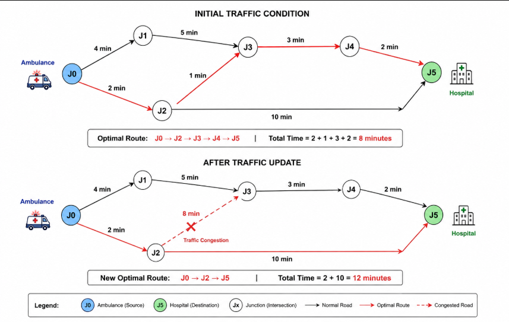
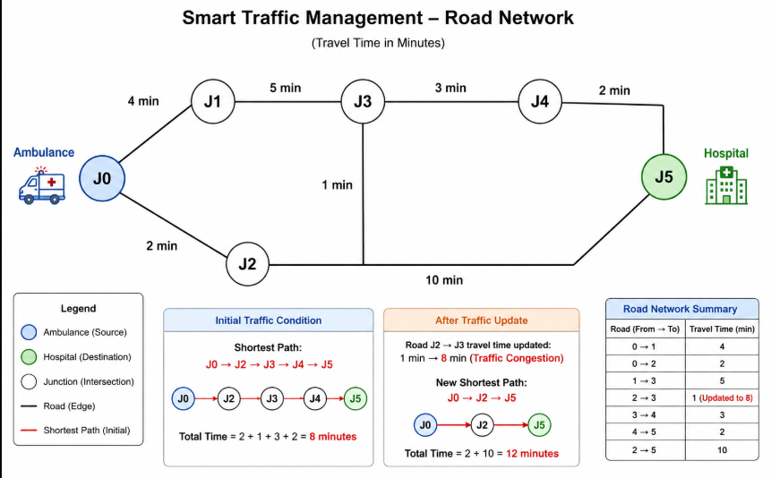

|
|
Pimpri Chinchwad Education Trust's Pimpri Chinchwad College of Engineering |
| Assignment No. 4 | |
| Course:- Design & Analysis of Algorithms Laboratory (BIT25PC04) | |
| Name:- Aditya Chandrajit Deore | |
| PRN:- 124B1F116 | |
1. Title
Smart Traffic Management for Emergency Vehicles using Dijkstra's Single Source Shortest Path Algorithm with Dynamic Traffic Updates and Route Visualization.
2. Aim
To design, implement, and analyze an intelligent traffic routing system for emergency vehicles (ambulances) across an urban road network, dynamically recalculating the fastest path to a hospital in response to real-time traffic congestion fluctuations using Dijkstra’s Algorithm.
3. Problem Statement
A smart city is implementing an intelligent traffic management system to assist ambulances in reaching hospitals as quickly as possible. The city's road network is represented as a graph where:
- Intersections (junctions): Represented as nodes \(J_0, J_1, \dots, J_{n-1}\).
- Roads between intersections: Represented as edges with weights indicating travel time (in minutes).
- Source (S): Ambulance location (\(J_0\)).
- Destination (D): Hospital location (\(J_5\)).
- Dynamic Traffic: Edge weights dynamically change in real time due to traffic congestion.
4. Primary Objectives
- Implement Dijkstra's Algorithm with a Min-Priority Queue (\(O((V+E)\log V)\)) to determine the shortest path from the ambulance to the hospital.
- Account for dynamic weight updates when traffic conditions change on road segments.
- Optimize the graph representation using an Adjacency List of weighted edges.
- Provide visual representation of the road network, ambulance (Blue), hospital (Green), and the optimal emergency route (Red).
5. Algorithm Design & Theoretical Background
Dijkstra's Algorithm is a greedy single-source shortest path algorithm that operates on graphs with non-negative edge weights. It iteratively selects the vertex \(u\) with the smallest known tentative distance from the source, settles it, and relaxes all adjacent outgoing edges \((u, v)\).
5.1 Relaxation Property
$$\text{If } d[u] + w(u, v) < d[v] \implies d[v] = d[u] + w(u, v), \quad \text{parent}[v] = u$$
5.2 Road Network Dataset & Topology (6 Junctions)
| Road Segment | Initial Travel Time | Updated Travel Time | Condition |
|---|---|---|---|
| \(0 \to 1\) | 4 minutes | 4 minutes | Normal Road |
| \(0 \to 2\) | 2 minutes | 2 minutes | Normal Road |
| \(1 \to 3\) | 5 minutes | 5 minutes | Normal Road |
| \(2 \to 3\) | 1 minute | 8 minutes | Traffic Congestion |
| \(3 \to 4\) | 3 minutes | 3 minutes | Normal Road |
| \(4 \to 5\) | 2 minutes | 2 minutes | Normal Road |
| \(2 \to 5\) | 10 minutes | 10 minutes | Bypass Highway |

6. Java Source Code Implementation
import java.util.*; import javax.swing.*; import java.awt.*; public class SmartTraffic { // Edge represents a road static class Edge { int to; int weight; Edge(int to, int weight) { this.to = to; this.weight = weight; } } static ArrayList<Edge>[] graph; static int[] parent; // Add road static void addRoad(int u, int v, int weight) { graph[u].add(new Edge(v, weight)); } // Dijkstra's Algorithm static int[] dijkstra(int source) { int n = graph.length; int[] distance = new int[n]; parent = new int[n]; Arrays.fill(distance, Integer.MAX_VALUE); Arrays.fill(parent, -1); PriorityQueue<int[]> pq = new PriorityQueue<>( Comparator.comparingInt(a -> a[1]) ); distance[source] = 0; pq.add(new int[]{source, 0}); while (!pq.isEmpty()) { int[] current = pq.poll(); int u = current[0]; int dist = current[1]; if (dist > distance[u]) continue; for (Edge edge : graph[u]) { int v = edge.to; int newDist = dist + edge.weight; if (newDist < distance[v]) { distance[v] = newDist; parent[v] = u; pq.add(new int[]{v, newDist}); } } } return distance; } // Print shortest path static void printPath(int source, int destination) { ArrayList<Integer> path = new ArrayList<>(); int current = destination; while (current != -1) { path.add(current); current = parent[current]; } Collections.reverse(path); System.out.print("Path: "); for (int i = 0; i < path.size(); i++) { System.out.print(path.get(i)); if (i < path.size() - 1) System.out.print(" -> "); } } // Update road weight static void updateRoad(int u, int v, int newWeight) { for (Edge edge : graph[u]) { if (edge.to == v) { edge.weight = newWeight; return; } } } // Simple visualization static void showGraph(int[] path, int source, int hospital) { JFrame frame = new JFrame("Smart Traffic Management"); frame.setSize(900, 600); frame.setDefaultCloseOperation(JFrame.DISPOSE_ON_CLOSE); JPanel panel = new JPanel() { protected void paintComponent(Graphics g) { super.paintComponent(g); int[][] pos = { {100, 250}, {250, 120}, {250, 380}, {450, 250}, {650, 120}, {650, 380} }; g.setColor(Color.GRAY); for (int u = 0; u < graph.length; u++) { for (Edge e : graph[u]) { g.drawLine(pos[u][0], pos[u][1], pos[e.to][0], pos[e.to][1]); } } g.setColor(Color.RED); for (int i = 0; i < path.length - 1; i++) { g.drawLine(pos[path[i]][0], pos[path[i]][1], pos[path[i+1]][0], pos[path[i+1]][1]); } for (int i = 0; i < pos.length; i++) { if (i == source) g.setColor(Color.BLUE); else if (i == hospital) g.setColor(Color.GREEN); else g.setColor(Color.BLACK); g.fillOval(pos[i][0] - 15, pos[i][1] - 15, 30, 30); g.setColor(Color.BLACK); g.drawString("J" + i, pos[i][0] - 5, pos[i][1] - 20); } } }; frame.add(panel); frame.setVisible(true); } public static void main(String[] args) { int n = 6; graph = new ArrayList[n]; for (int i = 0; i < n; i++) graph[i] = new ArrayList<>(); addRoad(0, 1, 4); addRoad(0, 2, 2); addRoad(1, 3, 5); addRoad(2, 3, 1); addRoad(3, 4, 3); addRoad(4, 5, 2); addRoad(2, 5, 10); int source = 0, hospital = 5; int[] distance = dijkstra(source); System.out.println("----- Initial Traffic -----"); System.out.println("Shortest distance to hospital: " + distance[hospital] + " minutes"); printPath(source, hospital); // Dynamic traffic update System.out.println("\n\n----- Traffic Update -----"); System.out.println("Road 2 -> 3 is congested.\nTravel time changed from 1 to 8 minutes."); updateRoad(2, 3, 8); distance = dijkstra(source); System.out.println("\n----- Updated Traffic -----"); System.out.println("New shortest distance: " + distance[hospital] + " minutes"); printPath(source, hospital); } }
7. Program Output & Execution Results
The terminal output below illustrates Dijkstra's algorithm determining the initial shortest route to the hospital, followed by dynamic edge weight alteration and real-time rerouting.
PS C:\Users\adity\Desktop\Subjects\DAA\Assignment - 4> javac SmartTraffic.java PS C:\Users\adity\Desktop\Subjects\DAA\Assignment - 4> java SmartTraffic ----- Initial Traffic ----- Shortest distance to hospital: 8 minutes Path: 0 -> 2 -> 3 -> 4 -> 5 ----- Traffic Update ----- Road 2 -> 3 is congested. Travel time changed from 1 to 8 minutes. ----- Updated Traffic ----- New shortest distance: 12 minutes Path: 0 -> 2 -> 5

8. Conclusion & Key Takeaways
The implementation of Dijkstra's Algorithm in SmartTraffic.java successfully calculates the minimum travel time across the road network. When dynamic congestion occurs on segment \(J_2 \to J_3\), the system immediately detects that the bypass path \(0 \to 2 \to 5\) (12 minutes) is faster than continuing through the bottleneck (\(2+8+3+2 = 15\) minutes), ensuring uninterrupted emergency transit.